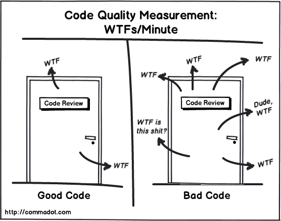

关于烂代码的那些事（中）
来源:Axb的自我修养
1.摘要
这是烂代码系列的第二篇，在文章中我会跟大家讨论一下如何尽可能高效和客观的评价代码的优劣。
在发布了关于烂代码的那些事（上）之后，发现这篇文章竟然意外的很受欢迎，很多人也描(tu)述(cao)了各自代码中这样或者那样的问题。
最近部门在组织bootcamp，正好我负责培训代码质量部分，在培训课程中让大家花了不少时间去讨论、改进、完善自己的代码。虽然刚毕业的同学对于代码质量都很用心，但最终呈现出来的质量仍然没能达到“十分优秀”的程度。 究其原因，主要是不了解好的代码“应该”是什么样的。
2.什么是好代码
写代码的第一步是理解什么是好代码。在准备bootcamp的课程的时候，我就为这个问题犯了难，我尝试着用一些精确的定义区分出“优等品”、“良品”、“不良品”；但是在总结的过程中，关于“什么是好代码”的描述却大多没有可操作性
2.1.好代码的定义
随便从网上搜索了一下“优雅的代码”，找到了下面这样的定义:
Bjarne Stroustrup，C++之父：
- 逻辑应该是清晰的，bug难以隐藏；
- 依赖最少，易于维护；
- 错误处理完全根据一个明确的策略；
- 性能接近最佳化，避免代码混乱和无原则的优化；
- 整洁的代码只做一件事。
Grady Booch，《面向对象分析与设计》作者：
- 整洁的代码是简单、直接的；
- 整洁的代码，读起来像是一篇写得很好的散文；
- 整洁的代码永远不会掩盖设计者的意图，而是具有少量的抽象和清晰的控制行。
Michael Feathers，《修改代码的艺术》作者：
- 整洁的代码看起来总是像很在乎代码质量的人写的；
- 没有明显的需要改善的地方；
- 代码的作者似乎考虑到了所有的事情。
看起来似乎说的都很有道理，可是实际评判的时候却难以参考，尤其是对于新人来说，如何理解“简单的、直接的代码”或者“没有明显的需要改善的地方”？
而实践过程中，很多同学也确实面对这种问题：对自己的代码总是处在一种心里不踏实的状态，或者是自己觉得很好了，但是却被其他人认为很烂，甚至有几次我和新同学因为代码质量的标准一连讨论好几天，却谁也说服不了谁：我们都坚持自己对于好代码的标准才是正确的。
在经历了无数次code review之后，我觉得这张图似乎总结的更好一些：

代码质量的评价标准某种意义上有点类似于文学作品，比如对小说的质量的评价主要来自于它的读者，由个体主观评价形成一个相对客观的评价。并不是依靠字数，或者作者使用了哪些修辞手法之类的看似完全客观但实际没有什么意义的评价手段。
但代码和小说还有些不一样，它实际存在两个读者：计算机和程序员。就像上篇文章里说的，即使所有程序员都看不懂这段代码，它也是可以被计算机理解并运行的。
所以对于代码质量的定义我需要于从两个维度分析：主观的，被人类理解的部分；还有客观的，在计算机里运行的状况。
既然存在主观部分，那么就会存在个体差异，对于同一段代码评价会因为看代码的人的水平不同而得出不一样的结论，这也是大多数新人面对的问题：他们没有一个可以执行的评价标准，所以写出来的代码质量也很难提高。
有些介绍代码质量的文章讲述的都是倾向或者原则，虽然说的很对，但是实际指导作用不大。所以在这篇文章里我希望尽可能把评价代码的标准用（我自认为）与实际水平无关的评价方式表示出来。
2.2.可读的代码
在权衡很久之后，我决定把可读性的优先级排在前面：一个程序员更希望接手一个有bug但是看的懂的工程，还是一个没bug但是看不懂的工程？如果是后者，可以直接关掉这个网页，去做些对你来说更有意义的事情。
2.2.1.逐字翻译
在很多跟代码质量有关的书里都强调了一个观点：程序首先是给人看的，其次才是能被机器执行，我也比较认同这个观点。在评价一段代码能不能让人看懂的时候，我习惯让作者把这段代码逐字翻译成中文，试着组成句子，之后把中文句子读给另一个人没有看过这段代码的人听，如果另一个人能听懂，那么这段代码的可读性基本就合格了。
用这种判断方式的原因很简单：其他人在理解一段代码的时候就是这么做的。阅读代码的人会一个词一个词的阅读，推断这句话的意思，如果仅靠句子无法理解，那么就需要联系上下文理解这句代码，如果简单的联系上下文也理解不了，可能还要掌握更多其它部分的细节来帮助推断。大部分情况下，理解一句代码在做什么需要联系的上下文越多，意味着代码的质量越差。
逐字翻译的好处是能让作者能轻易的发现那些只有自己知道的、没有体现在代码里的假设和可读性陷阱。无法从字面意义上翻译出原本意思的代码大多都是烂代码，比如“ms代表messageService“，或者“ms.proc()是发消息“，或者“tmp代表当前的文件”。
2.2.2.遵循约定
约定包括代码和文档如何组织，注释如何编写，编码风格的约定等等，这对于代码未来的维护很重要。对于遵循何种约定没有一个强制的标准，不过我更倾向于遵守更多人的约定。
与开源项目保持风格一致一般来说比较靠谱，其次也可以遵守公司内部的编码风格。但是如果公司内部的编码风格和当前开源项目的风格冲突比较严重，往往代表着这个公司的技术倾向于封闭，或者已经有些跟不上节奏了。
但是无论如何，遵守一个约定总比自己创造出一些规则要好很多，这降低了理解、沟通和维护的成本。如果一个项目自己创造出了一些奇怪的规则，可能意味着作者看过的代码不够多。
一个工程是否遵循了约定往往需要代码阅读者有一定经验，或者需要借助checkstyle这样的静态检查工具。如果感觉无处下手，那么大部分情况下跟着google做应该不会有什么大问题：可以参考google code style，其中一部分有对应的中文版。
另外，没有必要纠结于遵循了约定到底有什么收益，就好像走路是靠左好还是靠右好一样，即使得出了结论也没有什么意义，大部分约定只要遵守就可以了。
2.2.3.文档和注释
文档和注释是程序很重要的部分，他们是理解一个工程或项目的途径之一。两者在某些场景下定位会有些重合或者交叉（比如javadoc实际可以算是文档）。
对于文档的标准很简单，能找到、能读懂就可以了，一般来说我比较关心这几类文档：
- 1、 对于项目的介绍，包括项目功能、作者、目录结构等，读者应该能3分钟内大致理解这个工程是做什么的。
- 2、 针对新人的QuickStart，读者按照文档说明应该能在1小时内完成代码构建和简单使用。
- 3、针对使用者的详细说明文档，比如接口定义、参数含义、设计等，读者能通过文档了解这些功能（或接口）的使用方法。
有一部分注释实际是文档，比如之前提到的javadoc。这样能把源码和注释放在一起，对于读者更清晰，也能简化不少文档的维护的工作。
还有一类注释并不作为文档的一部分，比如函数内部的注释，这类注释的职责是说明一些代码本身无法表达的作者在编码时的思考，比如“为什么这里没有做XXX”，或者“这里要注意XXX问题”。
一般来说我首先会关心注释的数量：函数内部注释的数量应该不会有很多，也不会完全没有，个人的经验值是滚动几屏幕看到一两处左右比较正常。过多的话可能意味着代码本身的可读性有问题，而如果一点都没有可能意味着有些隐藏的逻辑没有说明，需要考虑适当的增加一点注释了。
其次也需要考虑注释的质量：在代码可读性合格的基础上，注释应该提供比代码更多的信息。文档和注释并不是越多越好，它们可能会导致维护成本增加。关于这部分的讨论可以参考简洁部分的内容。
2.2.4.推荐阅读
《代码整洁之道》
2.3.可发布的代码
新人的代码有一个比较典型的特征，由于缺少维护项目的经验，写的代码总会有很多考虑不到的地方。比如说测试的时候似乎没什么异常，项目发布之后才发现有很多意料之外的状况；而出了问题之后不知道从哪下手排查，或者仅能让系统处于一个并不稳定的状态，依靠一些巧合勉强运行。
2.3.1.处理异常
新手程序员普遍没有处理异常的意识，但代码的实际运行环境中充满了异常：服务器会死机，网络会超时，用户会胡乱操作，不怀好意的人会恶意攻击你的系统。
我对一段代码异常处理能力的第一印象来自于单元测试的覆盖率。大部分异常难以在开发或者测试环境里复现，即使有专业的测试团队也很难在集成测试环境中模拟所有的异常情况。
而单元测试可以比较简单的模拟各种异常情况，如果一个模块的单元测试覆盖率连50%都不到，很难想象这些代码考虑了异常情况下的处理，即使考虑了，这些异常处理的分支都没有被验证过，怎么指望实际运行环境中出现问题时表现良好呢？
2.3.2.处理并发
我收到的很多简历里都写着：精通并发编程/熟悉多线程机制，诸如此类，跟他们聊的时候也说的头头是道，什么锁啊互斥啊线程池啊同步啊信号量啊一堆一堆的名词滔滔不绝。而给应聘者一个实际场景，让应聘者写一段很简单的并发编程的小程序，能写好的却不多。
实际上并发编程也确实很难，如果说写好同步代码的难度为5，那么并发编程的难度可以达到100。这并不是危言耸听，很多看似稳定的程序，在面对并发场景的时候仍然可能出现问题：比如最近我们就碰到了一个linux kernel在调用某个系统函数时由于同步问题而出现crash的情况。
而是否高质量的实现并发编程的关键并不是是否应用了某种同步策略，而是看代码中是否保护了共享资源：
- 局部变量之外的内存访问都有并发风险（比如访问对象的属性，访问静态变量等）
- 访问共享资源也会有并发风险（比如缓存、数据库等）。
- 被调用方如果不是声明为线程安全的，那么很有可能存在并发问题（比如java的hashmap）。
- 所有依赖时序的操作，即使每一步操作都是线程安全的，还是存在并发问题（比如先删除一条记录，然后把记录数减一）。
前三种情况能够比较简单的通过代码本身分辨出来，只要简单培养一下自己对于共享资源调用的敏感度就可以了。
但是对于最后一种情况，往往很难简单的通过看代码的方式看出来，甚至出现并发问题的两处调用并不是在同一个程序里（比如两个系统同时读写一个数据库，或者并发的调用了一个程序的不同模块等）。但是，只要是代码里出现了不加锁的，访问共享资源的“先做A，再做B”之类的逻辑，可能就需要提高警惕了。
2.3.3.优化性能
性能是评价程序员能力的一个重要指标，很多程序员也对程序的性能津津乐道。但程序的性能很难直接通过代码看出来，往往要借助于一些性能测试工具，或者在实际环境中执行才能有结果。
如果仅从代码的角度考虑，有两个评价执行效率的办法：
- 算法的时间复杂度，时间复杂度高的程序运行效率必然会低。
- 单步操作耗时，单步耗时高的操作尽量少做，比如访问数据库，访问io等。
而实际工作中，也会见到一些程序员过于热衷优化效率，相对的会带来程序易读性的降低、复杂度提高、或者增加工期等等。对于这类情况，简单的办法是让作者说出这段程序的瓶颈在哪里，为什么会有这个瓶颈，以及优化带来的收益。
当然，无论是优化不足还是优化过度，判断性能指标最好的办法是用数据说话，而不是单纯看代码，性能测试这部分内容有些超出这篇文章的范围，就不详细展开了。
2.3.4.日志
日志代表了程序在出现问题时排查的难易程度，经(jing)验(chang)丰(cai)富(keng)的程序员大概都会遇到过这个场景：排查问题时就少一句日志，查不到某个变量的值不知道是什么，导致死活分析不出来问题到底出在哪。
对于日志的评价标准有三个：
- 日志是否足够，所有异常、外部调用都需要有日志，而一条调用链路上的入口、出口和路径关键点上也需要有日志。
- 日志的表达是否清晰，包括是否能读懂，风格是否统一等。这个的评价标准跟代码的可读性一样，不重复了。
- 日志是否包含了足够的信息，这里包括了调用的上下文、外部的返回值，用于查询的关键字等，便于分析信息。
对于线上系统来说，一般可以通过调整日志级别来控制日志的数量，所以打印日志的代码只要不对阅读造成障碍，基本上都是可以接受的。
2.3.5.扩展阅读
- 《Release It!: Design and Deploy Production-Ready Software》（不要看中文版，翻译的实在是太烂了）
- Numbers Everyone Should Know
2.4.可维护的代码
相对于前两类代码来说，可维护的代码评价标准更模糊一些，因为它要对应的是未来的情况，一般新人很难想象现在的一些做法会对未来造成什么影响。不过根据我的经验，一般来说，只要反复的提问两个问题就可以了：
- 他离职了怎么办？
- 他没这么做怎么办？
2.4.1.避免重复
几乎所有程序员都知道要避免拷代码，但是拷代码这个现象还是不可避免的成为了程序可维护性的杀手。
代码重复分为两种：模块内重复和模块间重复。无论何种重复，都在一定程度上说明了程序员的水平有问题，模块内重复的问题更大一些，如果在同一个文件里都能出现大片重复的代码，那表示他什么不可思议的代码都有可能写出来。
对于重复的判断并不需要反复阅读代码，一般来说现代的IDE都提供了检查重复代码的工具，只需点几下鼠标就可以了。
除了代码重复之外，很多热衷于维护代码质量的程序员新人很容易出现另一类重复：信息重复。
我见过一些新人喜欢在每行代码前面写一句注释，比如：
// 成员列表的长度>0并且<200
if(memberList.size() > 0 && memberList.size() < 200) {
// 返回当前成员列表
return memberList;
}
// 成员列表的长度>0并且<200
if(memberList.size() > 0 && memberList.size() < 200) {
// 返回当前成员列表
return memberList;
}
看起来似乎很好懂，但是几年之后，这段代码就变成了：
// 成员列表的长度>0并且<200
if(memberList.size() > 0 && memberList.size() < 200 || (tmp.isOpen() && flag)) {
// 返回当前成员列表
return memberList;
}
// 成员列表的长度>0并且<200
if(memberList.size() > 0 && memberList.size() < 200 || (tmp.isOpen() && flag)) {
// 返回当前成员列表
return memberList;
}
再之后可能会改成这样：
// edit by axb 2015.07.30
// 成员列表的长度>0并且<200
//if(memberList.size() > 0 && memberList.size() < 200 || (tmp.isOpen() && flag)) {
// 返回当前成员列表
// return memberList;
//}
if(tmp.isOpen() && flag) {
return memberList;
}
// edit by axb 2015.07.30
// 成员列表的长度>0并且<200
//if(memberList.size() > 0 && memberList.size() < 200 || (tmp.isOpen() && flag)) {
// 返回当前成员列表
// return memberList;
//}
if(tmp.isOpen() && flag) {
return memberList;
}
随着项目的演进，无用的信息会越积越多，最终甚至让人无法分辨哪些信息是有效的，哪些是无效的。
如果在项目中发现好几个东西都在做同一件事情，比如通过注释描述代码在做什么，或者依靠注释替代版本管理的功能，那么这些代码也不能称为好代码。
2.4.2.模块划分
模块内高内聚与模块间低耦合是大部分设计遵循的标准，通过合理的模块划分能够把复杂的功能拆分为更易于维护的更小的功能点。
一般来说可以从代码长度上初步评价一个模块划分的是否合理，一个类的长度大于2000行，或者一个函数的长度大于两屏幕都是比较危险的信号。
另一个能够体现模块划分水平的地方是依赖。如果一个模块依赖特别多，甚至出现了循环依赖，那么也可以反映出作者对模块的规划比较差，今后在维护这个工程的时候很有可能出现牵一发而动全身的情况。
一般来说有不少工具能提供依赖分析，比如IDEA中提供的Dependencies Analysis功能，学会这些工具的使用对于评价代码质量会有很大的帮助。
值得一提的是，绝大部分情况下，不恰当的模块划分也会伴随着极低的单元测试覆盖率：复杂模块的单元测试非常难写的，甚至是不可能完成的任务。所以直接查看单元测试覆盖率也是一个比较靠谱的评价方式。
2.4.3.简洁与抽象
只要提到代码质量，必然会提到简洁、优雅之类的形容词。简洁这个词实际涵盖了很多东西，代码避免重复是简洁、设计足够抽象是简洁，一切对于提高可维护性的尝试实际都是在试图做减法。
编程经验不足的程序员往往不能意识到简洁的重要性，乐于捣鼓一些复杂的玩意并乐此不疲。但复杂是代码可维护性的天敌，也是程序员能力的一道门槛。
跨过门槛的程序员应该有能力控制逐渐增长的复杂度，总结和抽象出事物的本质，并体现到自己设计和编码中。一个程序的生命周期也是在由简入繁到化繁为简中不断迭代的过程。
对于这部分我难以总结出简单易行的评价标准，它更像是一种思维方式，除了要理解、还需要练习。多看、多想、多交流，很多时候可以简化的东西会大大超出原先的预计。
2.4.4.推荐阅读
- 《重构-改善既有代码的设计》
- 《设计模式-可复用面向对象软件的基础》
- 《Software Architecture Patterns-Understanding Common Architecture Patterns and When to Use Them》
3.结语
这篇文章主要介绍了一些评价代码质量优劣的手段，这些手段中，有些比较客观，有些主观性更强。之前也说过，对代码质量的评价是一件主观的事情，这篇文章里虽然列举了很多评价手段。但是实际上，很多我认为没有问题的代码也会被其他人吐槽，所以这篇文章只能算是初稿，更多内容还需要今后继续补充和完善。
虽然每个人对于代码质量评价的倾向都不一样，但是总体来说评价代码质量的能力可以被比作程序员的“品味”，评价的准确度会随着自身经验的增加而增长。在这个过程中，需要随时保持思考、学习和批判的精神。
下篇文章里，会谈一谈具体如何提高自己的代码质量。